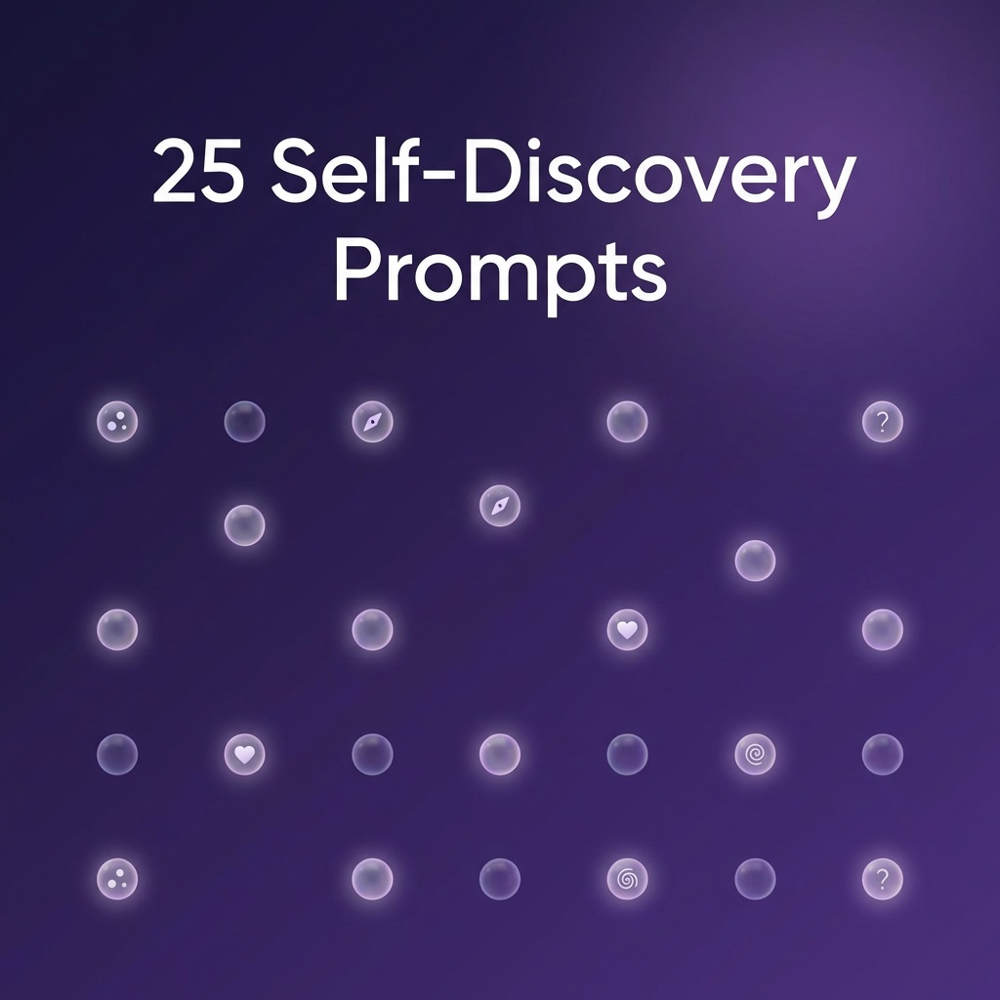

🔮 AI for Self-Discovery
25 Best AI Prompts for Self-Discovery
Copy, paste, and explore every dimension of who you are

You've got your Soul Blueprint reading. You've got ChatGPT or Gemini open. Now what? Here are 25 carefully crafted prompts — organised by life area — that will turn your reading into genuine self-understanding. Copy, paste, explore.
💡 How to use these: First generate your reading. Then paste it into ChatGPT or Gemini, followed by any prompt below. The AI will use your specific data to give personalised insights.
Advertisement
🪞 Self-Awareness (5 Prompts)
1. The Big Picture
Based on my full reading, give me a comprehensive personality overview in 3 paragraphs: 1) How I show up to the world (my mask), 2) What drives me emotionally underneath (my core), 3) The tension between the two and how it plays out in daily life.
2. Blind Spots Finder
What are my likely blind spots based on this reading? Things I probably can't see about myself but others can. Be honest and specific — I can handle it.
3. Your Superpower
Based on my reading, what's my one unique 'superpower' — the trait combination that very few people have? How is it both a gift and potentially a burden?
4. Energy Profile
Analyse my energy profile from this reading. When do I likely have the most energy? What drains me fastest? What recharges me? Am I an introvert, extrovert, or ambivert based on my full chart (not just Sun sign)?
5. Inner Contradictions
What contradictions exist in my chart? Where am I pulled in opposite directions? How do these inner tensions probably show up in my behaviour — and how can I make peace with them instead of fighting them?
💼 Career & Purpose (5 Prompts)
6. Ideal Career Fit
Based on my personality profile, suggest 5 specific career paths or roles that would let me use my natural strengths daily. For each, explain WHY it fits my chart. Avoid generic suggestions — be specific about job titles and work environments.
7. Leadership Style
What kind of leader am I naturally? Based on my reading, describe my leadership style, what teams would thrive under me, and what leadership situations would stress me out. Include specific advice for improving where I'm weakest.
8. Side Hustle Match
Based on my personality type and natural talents, suggest 3 side projects or creative outlets that would energise me (not drain me). Consider: Do I need social interaction or solo work? Creative or analytical? Fast results or long-term building?
9. Work Stress Decoder
What specific work situations are most likely to stress me out, based on my personality profile? What's my typical stress response? And what are 3 quick recovery strategies that align with my natural coping style?
10. Purpose Statement
Based on my full reading — considering my strengths, growth areas, life path number, and North Node — write me a personal purpose statement in one paragraph. Make it inspiring but grounded. Something I could read every morning.
Advertisement
❤️ Relationships (5 Prompts)
11. Love Language Decoded
Based on my personality reading, what are my likely love languages (ranked)? How do I express love vs. how I need to receive it? Where might there be a mismatch between what I give and what I need?
12. Ideal Partner Profile
Based on my chart, describe my ideal partner — not in zodiac terms, but in practical personality traits. What energy balances mine? What would complement my strengths and support my growth areas? What personality traits would create the most friction?
13. Conflict Style
How do I probably handle conflict, based on my reading? What's my default response when things get heated? What do I need from the other person during a disagreement? What's one thing I could do differently to resolve conflicts faster?
14. Friendship Style
What kind of friend am I based on my chart? Do I prefer a few deep connections or a wide social circle? What do I bring to friendships? What might friends wish I did differently? What kind of friends do I need around me to thrive?
15. Relationship Pattern Alert
Based on my reading, what relationship patterns might I repeat unconsciously? What kind of person do I tend to attract — and why? Is there a pattern I should be aware of that could lead to unhealthy dynamics?
🌱 Personal Growth (5 Prompts)
16. 30-Day Challenge
Create a personalised 30-day growth challenge based on my reading. Each day should have one small, specific action. Week 1: build on strengths. Week 2: gently challenge weak spots. Week 3: explore blind spots. Week 4: integrate everything. Make each daily task take under 15 minutes.
17. Shadow Work Guide
Based on my reading, what are my shadow traits — the parts of myself I might deny or suppress? For each shadow trait, explain: what triggers it, how it shows up in behaviour, and one gentle exercise to integrate it rather than fight it.
18. Decision-Making Framework
Based on my personality type, create a personal decision-making framework. How do I naturally make decisions (head, heart, or gut)? What am I likely to overlook? What 3 questions should I always ask myself before a big decision?
19. Self-Care Prescription
Prescribe a self-care routine based on my chart. Not generic bubble baths — actual activities that would recharge MY specific personality type. Include: daily micro-practices (2 min), weekly rituals (30 min), and monthly resets (half day).
20. Year Ahead Preview
Based on my reading and the current planetary transits for 2026, what themes and opportunities might come up for me this year? What should I focus on? What should I watch out for? Create a quarter-by-quarter overview.
🎨 Creative & Fun (5 Prompts)
Advertisement
21. Fictional Character Twin
Based on my personality reading, which 3 fictional characters (from books, movies, or TV) am I most similar to? Explain specifically which traits we share and which we don't.
22. Personality Poem
Write a poem about my personality based on this reading. Make it beautiful, specific to MY traits, and something I'd want to frame. Use metaphors from nature and the cosmos.
23. Dinner Party Guest List
Based on my personality, which 5 real historical or public figures would I have the most interesting dinner conversation with? Explain what we'd connect on and what we'd debate.
24. Soundtrack of Your Soul
Create a 10-song playlist that represents my personality based on this reading. For each song, explain which trait or life theme it represents. Include a mix of genres that match my energy.
25. Letter From Future You
Write a letter from my future self (10 years from now) to my current self. Base it on my personality reading — address my specific fears, celebrate my specific strengths, and give advice about the growth areas my chart highlights. Make it personal, warm, and motivating.
How to Get Started
- Generate your Soul Blueprint reading
- Open ChatGPT or Gemini
- Paste your full reading
- Copy any prompt from above and paste it after your reading
- Follow up with "tell me more" or "be more specific" to go deeper
Get Your Reading First
These prompts work best with your complete Soul Blueprint reading.
Generate Your Reading ✨